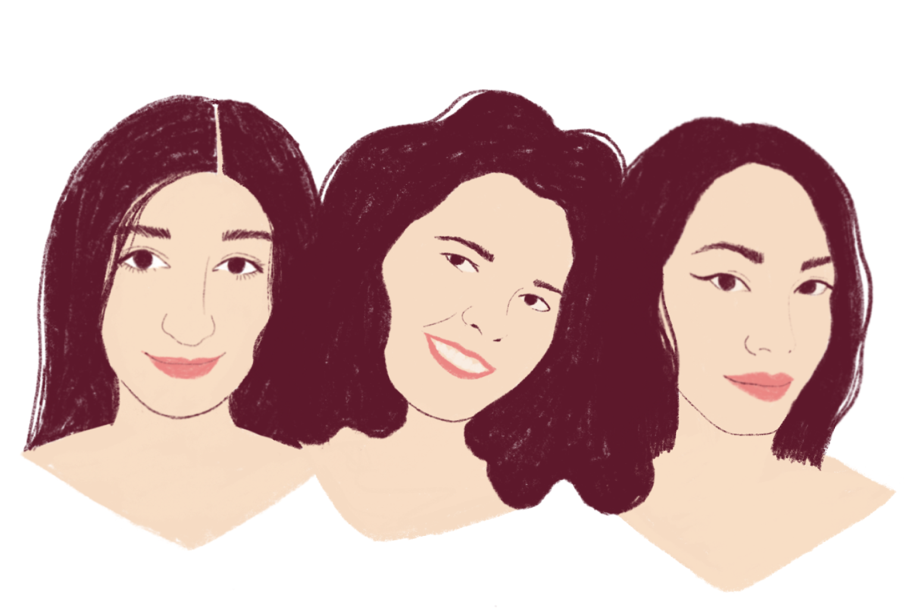

Haut les mains est un site dédié à l’apprentissage de jeux pour enfants.
Imaginée par Rachel Sabelle, illustratrice pour enfants, Capucine Quemin, maîtresse d’école, et Azumi Duc, mère de cinq enfants, l’idée est de permettre aux parents ou adultes de transmettre aux plus jeunes l’envie de s’amuser, s’épanouir et sociabiliser de manière simple et ludique.
Le site a vocation à être alimenté afin de proposer de nouvelles activités et s’enrichir de jour en jour.
Toute suggestion est la bienvenue : hautlesmains@jeux.com